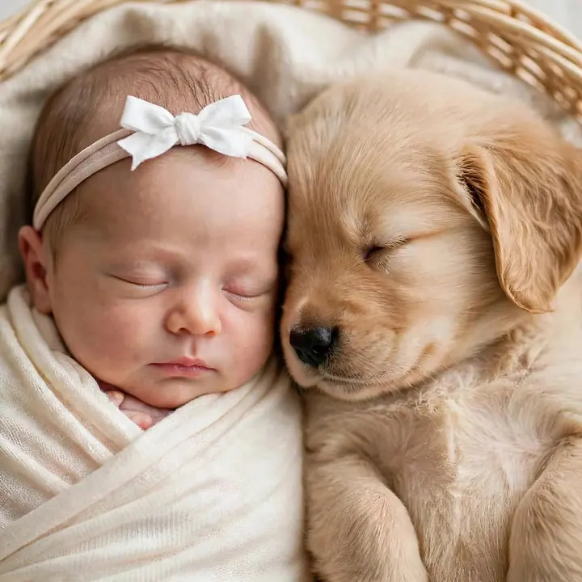
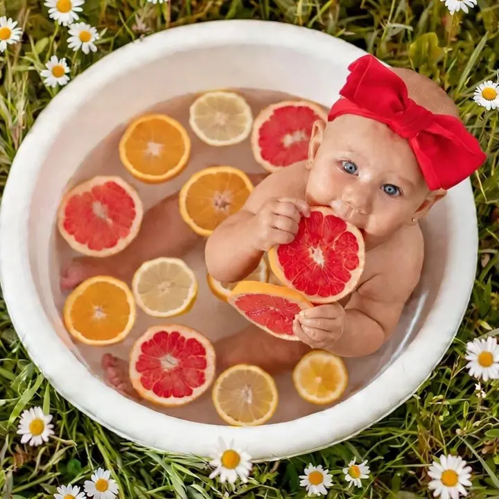
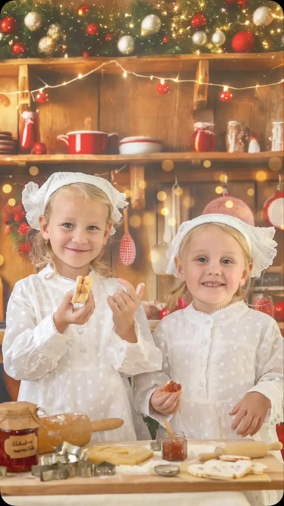

Dětské a rodinné focení
Chcete zachytit, jak vám děti rostou před očima, nebo byste si přáli rodinné foto? Fotíme 30 až 60 minut venku v přírodě nebo v ateliéru.

Jmenuji se Monika Šimíčková a fotím miminka, děti i celé rodiny v Brně a v okolí Ústí nad Orlicí. Od mala jsem ráda malovala, a tak ke každému focení vymýšlím scénu, rek…
Rezervovat termínFotit jsem začala, když se mi narodily děti. Chtěla jsem je nechat vyfotit u fotografa, jehož práce se mi moc líbila, jenže ten pracoval pouze s dospělými. A tak jsem si své děti začala fotit sama. Z koníčku se v roce 2007 stala profese, která mě nesmírně baví.


Baví mě rozesmívat děti, které občas přijdou rozhodnuté nespolupracovat, hrát si se světlem nebo s černobílým pozadím ve studiu a zkoušet nové úhly pohledu. Hlídám, kde právě kvetou pole, louky nebo sady, a sháním neobvyklé rekvizity. Dokonce jsem adoptovala bezzubého králíčka Bunnyho, který se před objektivem často předvádí víc než samotní klienti.
Záleží mi na osobním přístupu. Moc mě těší, když se ke mně lidé vracejí rok co rok a já se stávám jejich „rodinnou fotografkou“. Fotím v ateliéru v Brně-Komárově a venku na místech, která dobře znám.
Co fotím
Chcete zachytit, jak vám děti rostou před očima, nebo byste si přáli rodinné foto? Fotíme 30 až 60 minut venku v přírodě nebo v ateliéru.
Narodilo se vám malinkaté štěstíčko? Vyfotím ho v klidu a s trpělivostí, i když se miminku zrovna fotit nechce.
Zdokumentuji obřad, skupinové foto i stylizované fotografie novomanželů. Kvalitní a barevné fotky, které vydrží napořád.
Portréty, boudoir i focení ve studiu se světlem a černobílým pozadím. Máte nápad, pejska nebo akci? Pojďme to vyfotit.
Postup
Ozvěte se přes formulář, e-mail nebo telefon. Domluvíme termín a probereme, jakou atmosféru si přejete.
Fotíme v ateliéru v Brně-Komárově, nebo venku na místě, které znám a předem si ověřím. Když nemáte nápad, nechte vše na mně.
Dětské a rodinné focení trvá 30 až 60 minut. Děti nikam netlačím, rozesměju je a s Bunnym je o zábavu postaráno.
Z náhledů si vyberete své fotografie a já je upravím. Pošlu vám je v plném rozlišení pro tisk přes webové úložiště.
Otázky
300 Kč za jednu vybranou upravenou fotografii, minimálně 10 kusů. Focení trvá 30 až 60 minut v přírodě nebo v ateliéru.
Newborn focení stojí 350 Kč za fotografii, minimálně 10 kusů. Další upravené fotografie si můžete dokoupit za 150 Kč za kus.
2 000 Kč za hodinu focení, objednávka je minimálně na 3 hodiny. Všechny nafocené upravené fotografie dodávám přes internetové úložiště.
To se stává a nevadí to. S trpělivostí, hrou a rekvizitami se většinou rozesměje, a když ne, pomůže králíček Bunny.